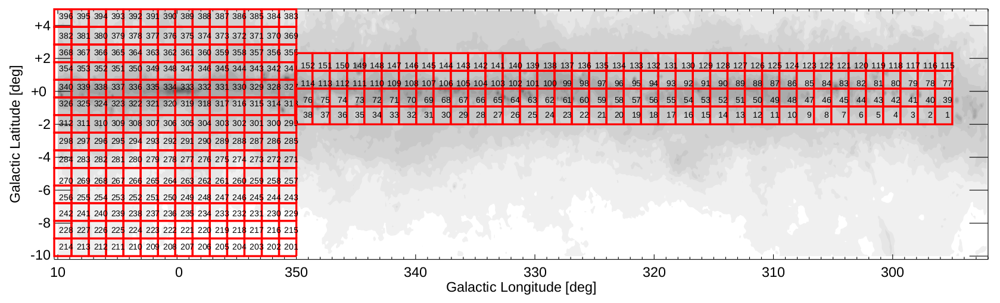
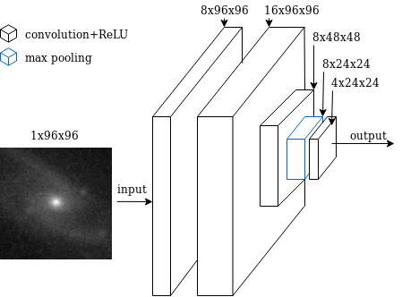
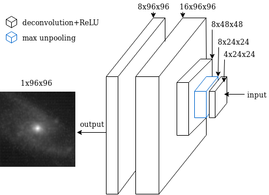
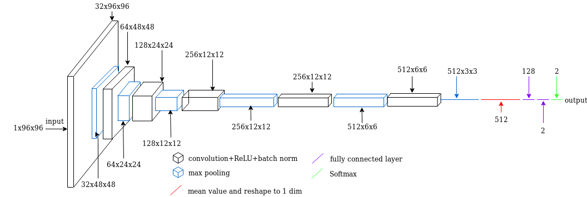

Effectiveness of Semi-supervised Deep-learning methods for Classification of Galaxies in the Galactic Plane
Gregory Austin
Abstract
This is a study on the effectiveness of using semi-supervised machine learning for classification of galaxies in near infrared (NIR)
surveys in the area of the Galactic Plane. Not many galaxies can be
found in the Galactic Plane (also called Zone of Avoidance) due to
high obscuration and high star density. There has been successes in
detecting galaxies in the Galactic Plane, however, the key problem
remains that high resolution data is difficult to search by eye given
that it is overly time consuming and laborious. Thus an automated
search and classification process is necessary. Semi-supervised deep
learning methods were developed for this study and used to classify galaxies. These galaxies are already classified galaxies to test
the effectiveness of the semi-supervised methods. The results indicated that the best semi-supervised learning method had a high
classification efficacy on the test set (>90%). As an explanation for
the high efficacy classification we hypothesize that the Encoder
from the autoencoder learnt some useful representations from the
comparatively large unlabeled dataset.
Objectives
The aim of this study is to evaluate the effectiveness of using Semi-
supervised Deep-learning methods for Classification of Galaxies
in the Galactic Plane. The effectiveness is defined as classification
task performance and was measured as the percentage correctly
classified in the test sets. The hypothesis of the study is:
Hypothesis 1. A semi-supervised deep-learning method for classification of galaxies in the Galactic Plane will yield high classification
efficacy with respect to a range of test data from the Galactic Plane.
Where high classification efficacy is classification accuracy >90%.
In order to adequately measure the effectiveness of the semi-supervised methods, they were compared against supervised methods. This study used an autoencoder with a deep architecture for the unsupervised learning component of the semi-supervised learning methods. Previous work that used autoencoders for semisupervised learning methods show these methods can have a high classification efficacy (> 90%) across a range of problem domains. It was hypothesized that the same will hold for classification with respect to a test set from the Galactic Plane.
Datasets
▪ Unlabeled Galaxy Dataset. The dataset is from the VVV survey. The VVV survey consists of tiles where each tile is a
section of the sky, refer to figure below. The VVV survey uses NIR filters
J, H and Ks, with Ks filter observations being the most common.
The tile names start with “b” for bulge and “d” for disk tiles, but
only bulge tiles were used in the Ks filter as FITS images. The bulge
tiles chosen were tile 328 to tile 338, these tiles were chosen so
that there is more data from the Galactic Plane. There are several
observations per tile, however in the chosen dataset one observation was chosen per tile with the criteria of best seen observation.
The criteria for best seen observation was decided by an expert
at VISTA Science Archive (VSA). A bash script for the unlabeled dataset can be downloaded here.

VVV Survey area and tile numbering from the VVV data release. The tile names start with “b” for bulge and “d” for disk tiles, followed by the numbering as shown in the figure.
▪ Labeled Galaxy Dataset. The dataset consists of images of
galaxies labeled from 1 to 9 indicating whether the image is a galaxy
(1 being most likely a galaxy, and 9 being least likely a galaxy). In
the dataset images range form 200x200 to 3500x3500 pixels and in
each image the point source is centered. The dataset is in the Ks
filter, this is used because the autoencoder is trained on data in the
Ks filter. Contact the author to acquire the labeled dataset.
Methods
Background
The core components of the semi-supervised learning architecture are an unsupervised and supervised method. Autoencoders are an existing unsupervised method and have had successes in representation learning. Representation learning is
when features of a dataset are learned, for example, in an astronomical dataset stars and galaxies are features that would be learned. An
autoencoder transforms inputs into outputs with the least possible
amount of distortion. Given a simple autoencoder, there are three
layers: an input layer, a hidden (encoding) layer, and a decoding
layer. The network is trained to reconstruct its inputs, this forces
the hidden layer to learn good representations of the inputs.
The autoencoder was trained on the near infrared astronomical survey: VVV (VISTA Variables in the Via Lactea) in the Ks filter.
The Ks filter captures light with a specific wave length, specifically
from 1.990 μm to 2.310 μm. The Ks filter was chosen because the
abundance of observations in this filter and extinction is lowest in
comparison to other NIR filters. Extinction is the absorption andscattering of electromagnetic radiation by dust and gas between a
point source, for example a galaxy, and the observer.
For the supervised learning component of semi-supervised learning methods the study used an ANN and a CNN. When an ANN or a CNN is combined with the Encoder from an autoencoder the result is a semi-supervised learning method. The ANN and CNN were trained using the pre-trained Encoder from the autoencoder as
input and the Encoder used the images of galaxies in the Ks filter as
input. The ANN and CNN were also trained on their own using the
labeled dataset for a comparison of supervised and semi-supervised
learning methods.
Autoencoder
A visual representation of the encoding and decoding layers is given by
the figures below. The input to the network is 1 channel 96x96
pixel images (galaxy data). Pooling is used because it helps the autoencoder learn
more robust features, pooling is invariant to local deformations. The convolutional layers are inspired by LeCun et al.’s LeNet which used convolutional layers.

The encoder (encoding network) for the autoencoder with actual input image.

The decoder (decoding network) for the autoencoder with actual output image.
Supervised methods
There were two supervised ANNs used in this study. First, a very
simple ANN is used to test the learned representation of the Autoencoder. Second, an image detection CNN is used to test the learned
representation and as a comparative method.
Simple Artificial Neural Network
The Simple ANN was set
up to take the encoders output as input. Alternatively the ANN can
be set up to take raw input. There was only one fully connected
layer in the Simple ANN. A fully connected layer is where each
neuron receives input from every node of the previous layer. Before
the encoder output was given to the fully connected layer, it went
through batch normalisation to improve the stability of the network. Batch normalisation normalises the output of a previous
activation layer by subtracting the batch mean and dividing by the
batch standard deviation. Following batch normalisation the output
went through the fully connected layer which maps to two outputs
(galaxy or non-galaxy). Alternatively the fully connected layer can
map to ten outputs for CIFAR-10. Finally the outputs are given to a
softmax function. The softmax function is an activation function
which is used for multiclass classification.
Convolutional Neural Network
The Convolutional Neural
Network has a total of 12 layers, 5 convolutional layers, 5 max
pooling layers, and 2 fully connected layers. Refer to the figure below for a
visual overview of the net. The CNN uses max pooling where the
objective is to down-sample input, reducing its dimensionality and
allowing for assumptions to be made about the down-sampled input. Max
pooling also helps decrease over-fitting by providing an abstracted
form of the representation. After the convolutional and max
pooling layers, there are two fully connected layers. The first fully
connected layer uses ReLU as an activation function. The
final fully connected layer uses softmax. Softmax is an activation
function which is used for multiclass classification.

The structure of the CNN. This configuration is for galaxy images.
Results and conclusions
The results of the study indicated that a semi-supervised deep-
learning method for classification of galaxies in the Galactic Plane
yields high classification efficacy with respect to a range of test
data from the Galactic Plane. Where high classification efficacy
is classification accuracy >90%. The best semi-supervised method
achieved a mean best of 96% on the test data set. This result supports hypothesis 1. The results also show that the
Encoder + Simple ANN (semi-supervised) is more effective than
the Simple ANN (supervised) on the galaxy test set. The results show that the Encoder + CNN (semi-supervised) is more effective than the CNN (supervised). Refer to the table below for results.
| Method |
Min |
Mean |
Max |
| Simple ANN |
77.25% |
77.9% |
78.25% |
| Simple ANN + Encoder |
95.25% |
96% |
96.25% |
| CNN |
64.5% |
82.5% |
92% |
| CNN + Encoder |
92.75% |
95.03% |
97% |
The Simple ANN + Encoder performed better than the Simple ANN on the test set. Additionally the CNN + Encoder performed better than the CNN
on the test set and therefore the Encoder learnt some useful representations
of the dataset. Using these representations
the semi-supervised learning method could utilize the data better
than a supervised method. This result is supported by previous
work having success with autoencoders and representation learning.